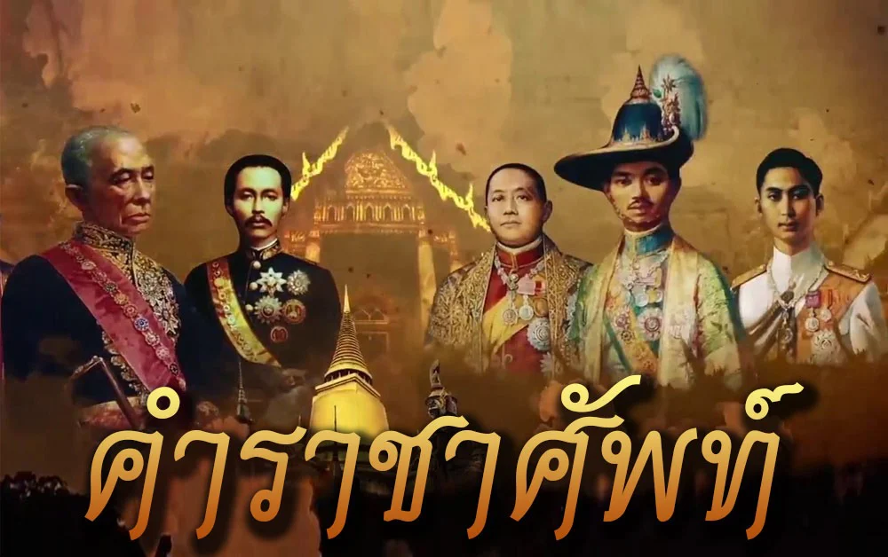

คำราชาศัพท์
คำราชาศัพท์ คือ คำศัพท์ที่ใช้ในการพูดหรือเขียนกับพระมหากษัตริย์ พระบรมวงศานุวงศ์ และบุคคลบางระดับตามหลักภาษาไทย เพื่อแสดงความเคารพและความสุภาพ คำราชาศัพท์มีทั้งคำนาม คำกริยา คำสรรพนาม และคำที่ใช้แสดงอาการต่าง ๆ
ตัวอย่างคำราชาศัพท์ เช่น
พระเศียร หมายถึง ศีรษะ
พระเนตร หมายถึง ดวงตา
พระกรรณ หมายถึง หู
พระโอษฐ์ หมายถึง ปาก
เสวย หมายถึง กิน
บรรทม หมายถึง นอน
เสด็จพระราชดำเนิน หมายถึง เดินทาง
พระราชดำริ หมายถึง ความคิดหรือความคิดเห็น
การใช้คำราชาศัพท์ต้องคำนึงถึงบุคคลและสถานการณ์ เพราะคำราชาศัพท์บางคำใช้เฉพาะพระมหากษัตริย์หรือพระบรมวงศานุวงศ์บางพระองค์ การใช้คำอย่างถูกต้องช่วยให้การสื่อสารมีความสุภาพ เหมาะสม และแสดงถึงความเข้าใจในวัฒนธรรมไทย